These have results per 1-second interval for: insert rate (IPS), max insert reponse time, query rate (QPS) and max query response time.
The results are from 1 client while the test may have N clients where N > 1.
The test is run with a rate limit for the number of inserts/s. In some cases the DBMS is unable to sustain that rate. When a DBMS can sustain that rate IPS will be a horizontal line.
Contents
my8022_rel_lto.cy10a_gcp_c2s60: IPS
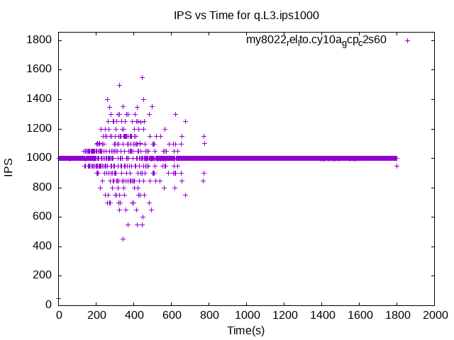my8022_rel_lto.cy10a_gcp_c2s60
my8022_rel_lto.cy10a_gcp_c2s60: max insert response time
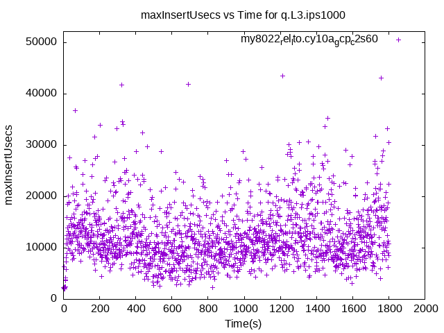my8022_rel_lto.cy10a_gcp_c2s60
my8022_rel_lto.cy10a_gcp_c2s60: QPS
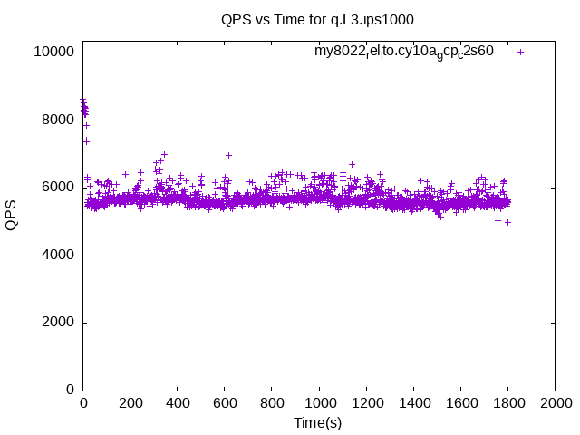my8022_rel_lto.cy10a_gcp_c2s60
my8022_rel_lto.cy10a_gcp_c2s60: max query response time
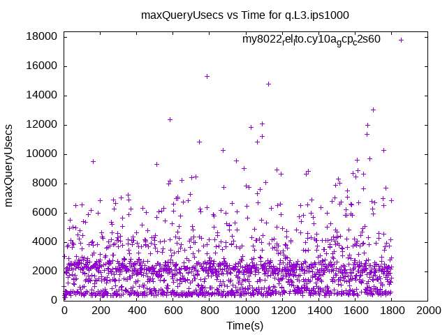my8022_rel_lto.cy10a_gcp_c2s60
my8028_rel_lto.cy10a_gcp_c2s60: IPS
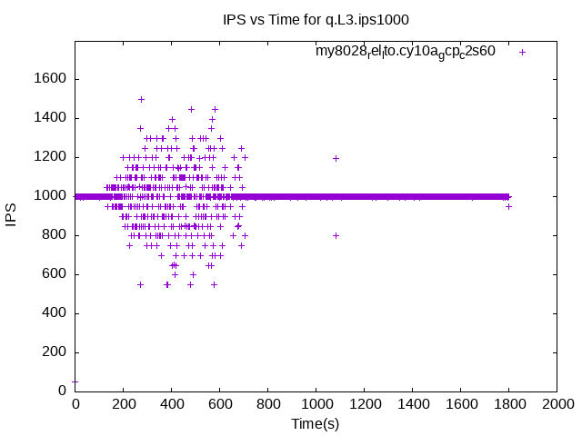my8028_rel_lto.cy10a_gcp_c2s60
my8028_rel_lto.cy10a_gcp_c2s60: max insert response time
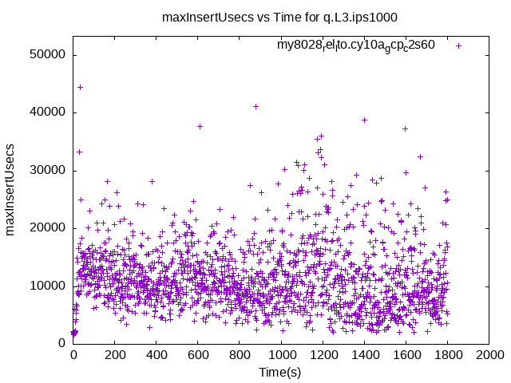my8028_rel_lto.cy10a_gcp_c2s60
my8028_rel_lto.cy10a_gcp_c2s60: QPS
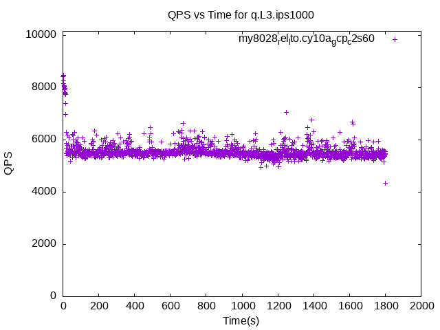my8028_rel_lto.cy10a_gcp_c2s60
my8028_rel_lto.cy10a_gcp_c2s60: max query response time
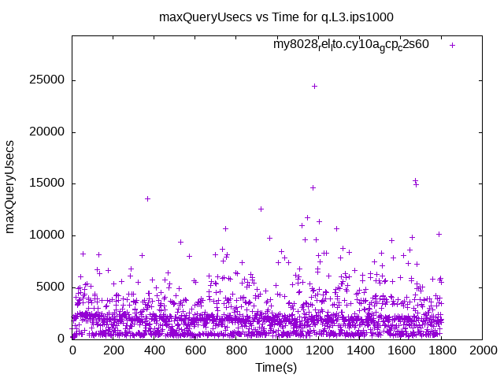my8028_rel_lto.cy10a_gcp_c2s60
my8031_rel_lto.cy10a_gcp_c2s60: IPS
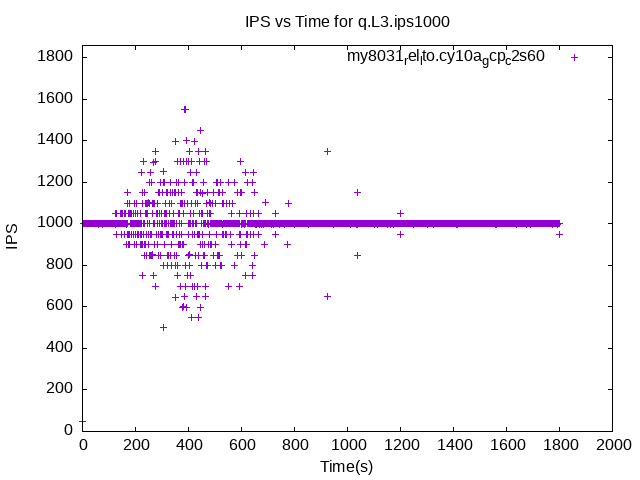my8031_rel_lto.cy10a_gcp_c2s60
my8031_rel_lto.cy10a_gcp_c2s60: max insert response time
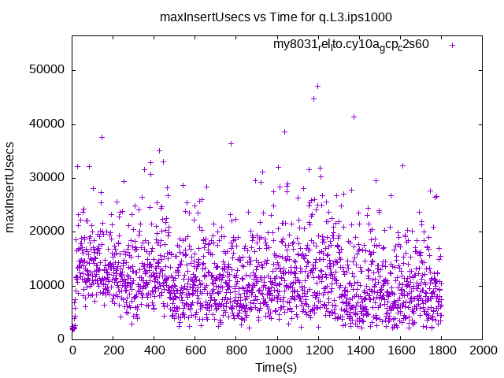my8031_rel_lto.cy10a_gcp_c2s60
my8031_rel_lto.cy10a_gcp_c2s60: QPS
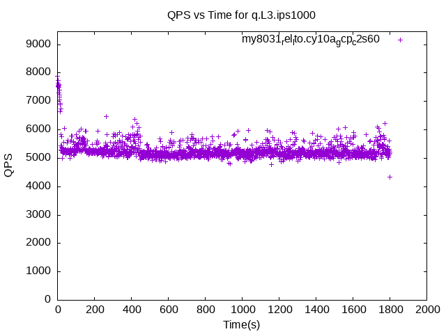my8031_rel_lto.cy10a_gcp_c2s60
my8031_rel_lto.cy10a_gcp_c2s60: max query response time
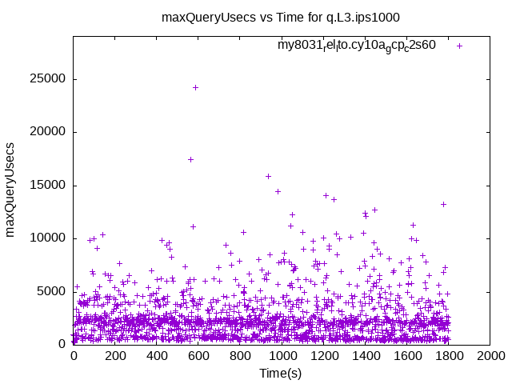my8031_rel_lto.cy10a_gcp_c2s60
my8032_rel_lto.cy10a_gcp_c2s60: IPS
 my8032_rel_lto.cy10a_gcp_c2s60
my8032_rel_lto.cy10a_gcp_c2s60
my8032_rel_lto.cy10a_gcp_c2s60: max insert response time
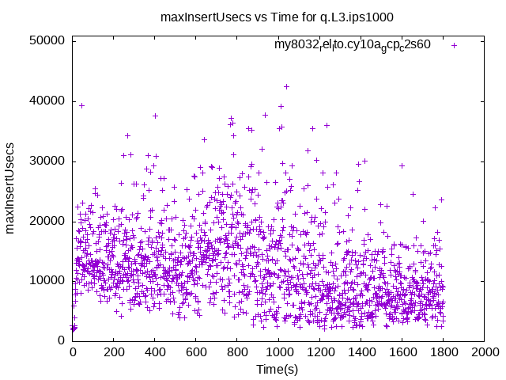my8032_rel_lto.cy10a_gcp_c2s60
my8032_rel_lto.cy10a_gcp_c2s60: QPS
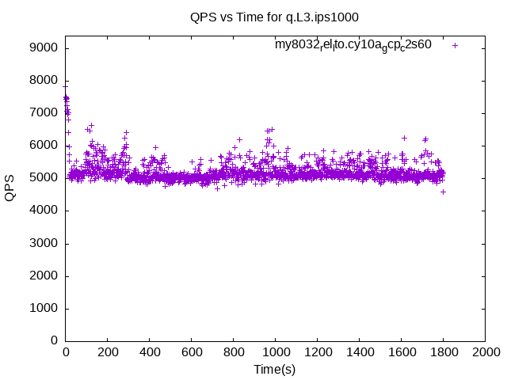my8032_rel_lto.cy10a_gcp_c2s60
my8032_rel_lto.cy10a_gcp_c2s60: max query response time
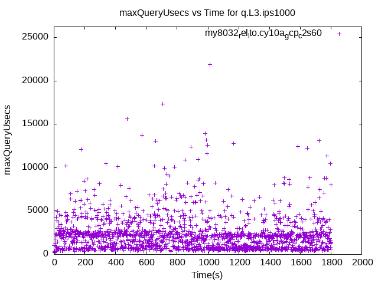my8032_rel_lto.cy10a_gcp_c2s60